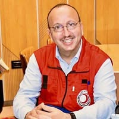

Assistant Professor
Sept 2018 - Present
Higher Institute of Music of Sousse. Teaching music theory, neurosciences of music, music therapy, Oud performance. Head of Music & New Technologies Dept.

Dr. Wassim Jomaa is a highly accomplished University Assistant and Researcher at the University of Sousse with diverse expertise spanning Music Therapy, Crisis Management (both financial and humanitarian), Neuroscience, and Education.
He holds a PhD in Art and Cultural Studies (Musicology & Social Psychology) from the University of Tunis. His work focuses on the therapeutic application of music, particularly in healthcare and crisis contexts. He directs the Music Therapy Master's program at the Faculty of Medicine of Sousse and leads the Mediterranean Association of Music Therapy (AMM).
Dr. Jomaa is also a certified Project Management Professional (PMP), ISO 21001 Lead Auditor, CFA charterholder, and Chief Investment Officer. He serves as President of the Tunisian Red Crescent (Hammam Sousse) and Director of a TRC/UNHCR refugee program.
Sept 2018 - Present
Higher Institute of Music of Sousse. Teaching music theory, neurosciences of music, music therapy, Oud performance. Head of Music & New Technologies Dept.
Ongoing
Leading the joint Master's program (Faculty of Medicine & Higher Institute of Musicology of Sousse).
Ongoing
Leading the Mediterranean Association of Music Therapy, promoting practice and research across the Mediterranean.
2020 - 2023
Monitoring the 'Art Therapy in Higher Educational Institutions' project (Jordan & Tunisia).
Dec 2017
PhD in Art And Cultural Studies (Musicology & Social Psychology) from the University Of Tunis.
Feb 2023 - Present
The Family Office Company BSC (c). Previously CIO at Capital Investments DIFC (2021-2023). CFA Charterholder.
2004 - 2021
Extensive experience in asset management and investment strategy (e.g., Qatar National Bank, AB INVEST).
Ongoing
Leading the Hammam Sousse branch, coordinating local humanitarian actions and crisis response.
Ongoing
Managing the program for protection and assistance to refugees in collaboration with UNHCR.
2017 (PMP), 2019 (ISO Auditor)
Project Management Professional (PMP) from PMI and ISO 21001 Lead Auditor for educational organizations.
Expert in therapeutic applications, Director of Master's program, President of the Mediterranean Association of Music Therapy (AMM).
Certified PMP professional skilled in leading complex international research, educational, and humanitarian projects.
Certified ISO 21001 Lead Auditor with expertise in quality management systems and curriculum development.
President of Red Crescent branch, Director of TRC/UNHCR refugee program. Experienced in crisis response and aid coordination.
Teaching and research in the neurosciences of music, exploring its impact on the brain and therapeutic applications.
Experienced Assistant Professor, Head of Department, Director of Master's Program, contributing to curriculum development.
Chief Investment Officer, CFA charterholder. Expertise in asset/portfolio management, investment strategy, and financial crisis analysis.
Dr. Jomaa brings a unique multidisciplinary approach that bridges music therapy with clinical outcomes. His leadership in the HEALING project has been instrumental in advancing art therapy education across the Mediterranean.
Faculty of Medicine
His dedication to humanitarian work through the Red Crescent and UNHCR programs demonstrates an exceptional commitment to community service. Dr. Jomaa's ability to balance academic excellence with real-world impact is truly remarkable.
Tunisian Red Crescent
As a CIO and CFA charterholder, Dr. Jomaa brings analytical rigor to every project. His work in music therapy research has produced some of the most cited studies in the field of therapeutic applications of music.
International Music Therapy Association
Co-authored randomized controlled trial investigating music's impact on anxiety during bronchoscopy procedures.
Read MoreCo-authored literature review (Gastrointestinal Nursing) on music as a non-pharmacological intervention during endoscopy.
Read MoreCoordinator for monitoring the 'Art Therapy in Higher Educational Institutions' project (Jordan & Tunisia), developing multidisciplinary diplomas.
Read MoreFor academic collaborations, speaking engagements, consultation, or humanitarian partnerships, please reach out.